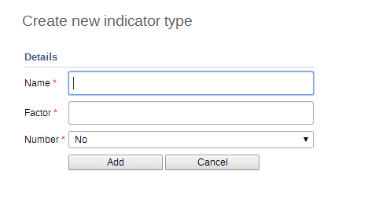

|  |
Indicator types define a factor that will be applied during aggregation. Indicator values that are calculate during a data mart export or report table generation process will appear properly formatted, and will therefore not require an additional multiplier (for example 100 in the case of percents) for the values to appear correctly formatted.
![[Note]](resources/images/admon/note.png) | Note |
|---|---|
As of version 2.4 of DHIS 2, the "Calculated data element" object has been deprecated. Instead, you can create a calculated data element by creating an indicator type with a factor of "1" and by setting the "Number" option to "Yes". The effect of setting the "Number" option to "Yes" will be that the indicator will effectively not have a denominator. You will therefore only be able to define a numerator, which will serve as the formula of the calculated data element. |
Click Apps > Maintenance > Indicator > Indicator type.
Click the yellow plus button.
In the Name field, type the name of the indicator type, for example "Per cent", "Per thousand", "Per ten thousand".
Type a Factor.
The factor is the numeric factor that will be multiplied by the indicator formula during the calculation of the indicator.
Number
Click Save.